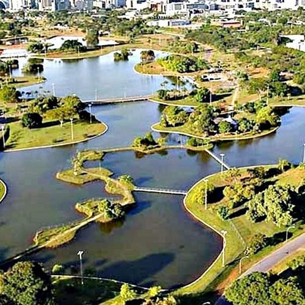
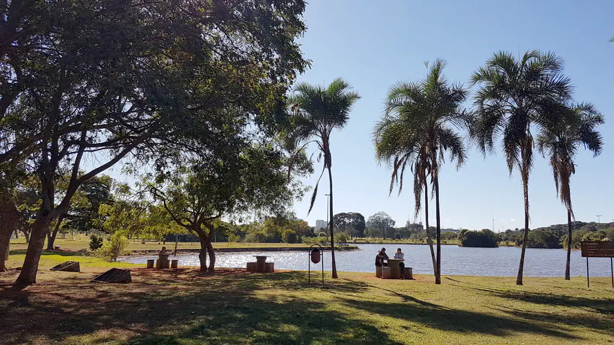
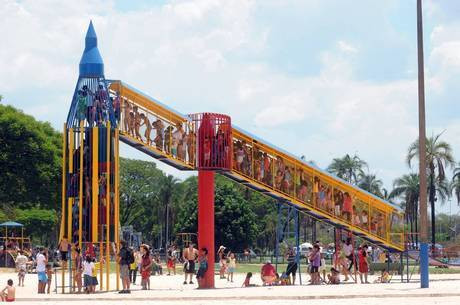
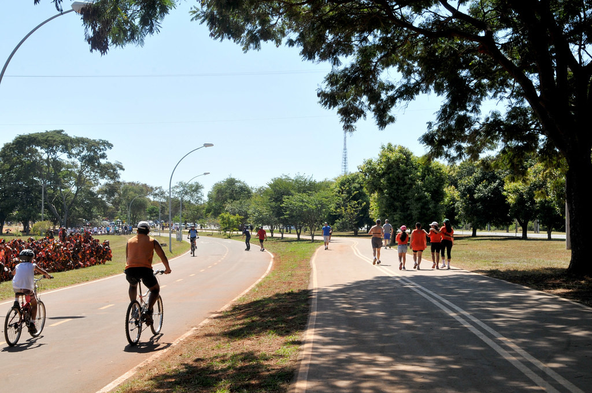
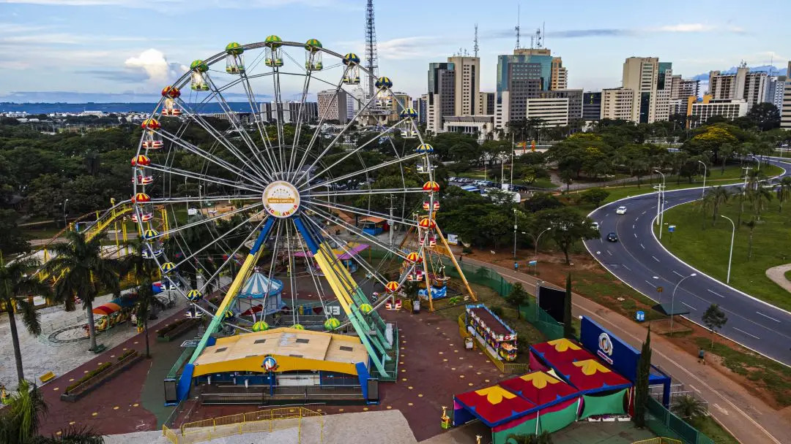
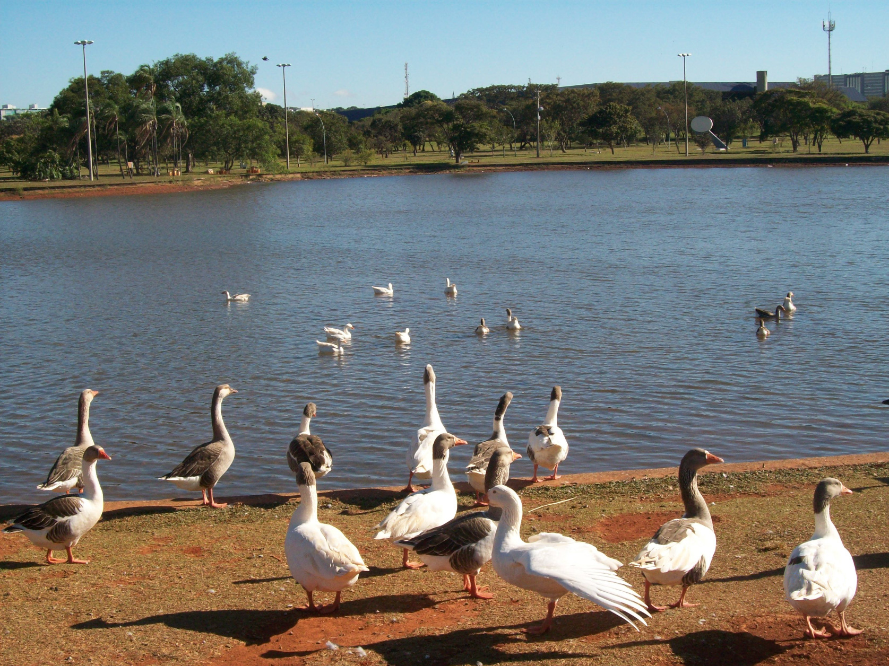
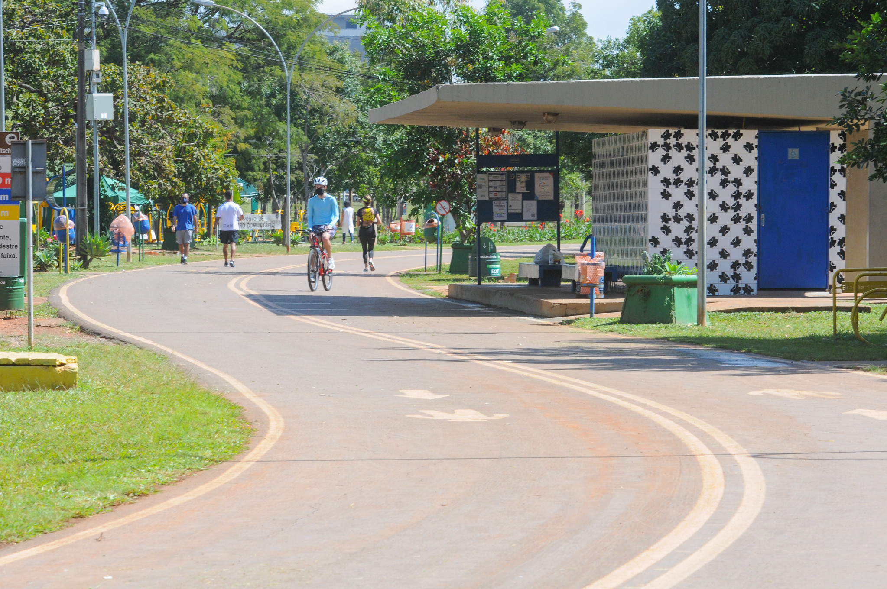
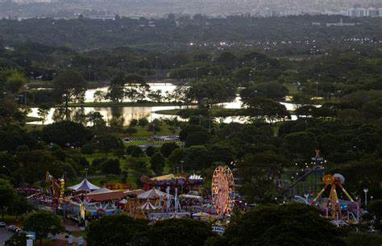
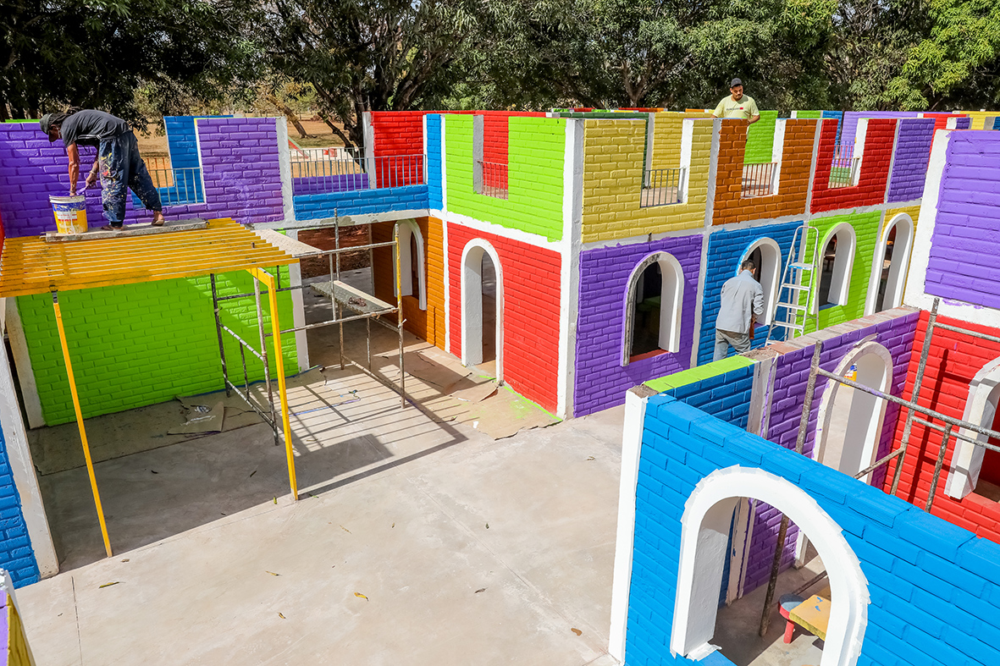
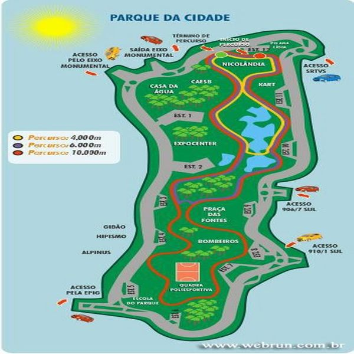

Apresentação
- O parque mais próximo do Plano Piloto. Fundado em 1978, possui uma área de 420 hectares. Projetado por Oscar Niemeyer, obra paisagística de Burle Marx e área urbanística desenvolvida por Lúcio Costa, o Parque ainda coleciona azulejos de Athos Bulcão. Nos finais de semana mais movimentados chega a receber até 80 mil pessoas.
Galeria de Fotos










Atrações
- Kartódromo
- Parque Nicolândia
- Centro hípico
- Praças
- Trilhas
- Lagos
- Áreas de lazer
Atividades
- Esportes diversos, com destaque para caminhadas, ciclismo, patinação, e jogos coletivos tais como vôlei, futebol, vôlei de praia, futvôlei, tênis e mais. Frequentemente são montadas arenas esportivas que recebem torneios nacionais e internacionais.
Dicas
- Este é ideal para passar o dia entre familiares e amigos, pois, conta com amplas áreas verdes onde é possível fazer piqueniques, churrascos, soltar pipa e brincadeiras em geral. Ah, não se pode deixar de mencionar que a proximidade com os setores hoteleiros da capital são um dos pontos fortes deste parque.
Curiosidades
- O Parque da Cidade foi eternizado pelo ilustre morador da cidade nos anos 80. Estamos falando de Renato Russo, cantor e compositor que liderou uma das bandas de rock mais famosas de todos os tempos no país, A Legião Urbana. A música Eduardo e Mônica teve o parque como inspiração e cenário: [...]“Se encontraram então no Parque da Cidade, a Mônica de moto e o Eduardo de camelo”[...]
Informações Práticas
- O parque mais próximo do Plano Piloto, com trilhas, lagos e áreas de lazer.
- Horário de Funcionamento: 6h - 22h
- Entrada: Gratuita
- Facilidades: Banheiros, áreas de piquenique, playgrounds
Como Chegar
- Endereço: SRPS - Asa Sul, Brasília - DF, 70297-400
- Transporte Público: Linhas de ônibus 108, 110, 111